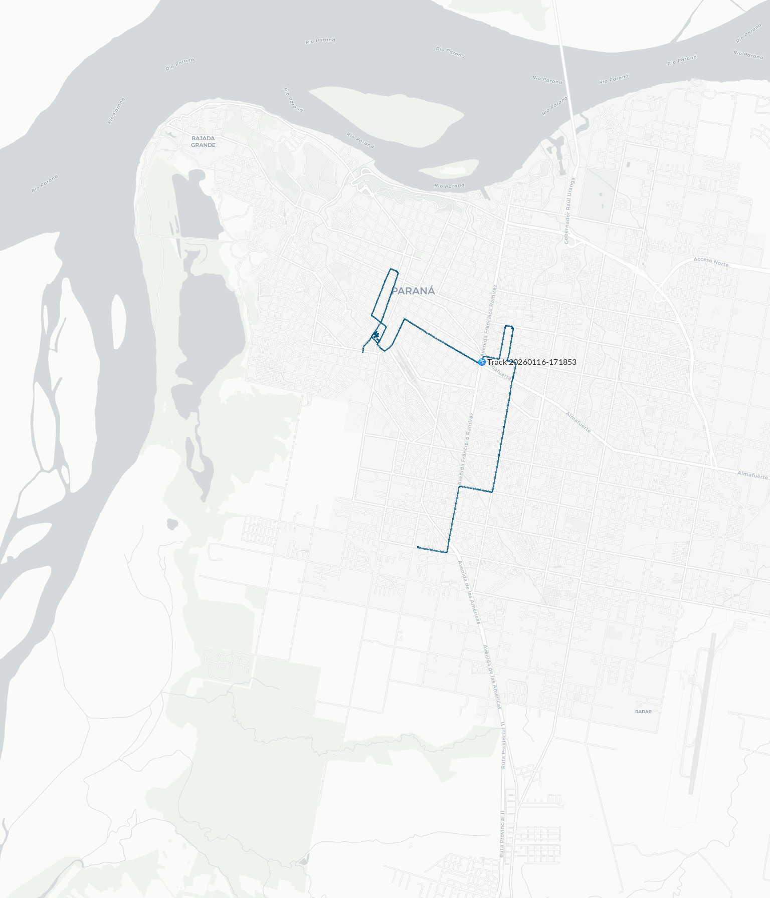

Render Preview
Preview of the generated map. If the image does not appear, verify the src path.
# Create output directory
mkdir output
# Install dependency
gem install libgd-gis
# Run the script
ruby multi_line_string.rbExpected output:
✔ Generated: output/multi_line_string.png

Generated with libgd-gis · Basemap © Carto
Style definition (light.yml)
global:
# Set to 'false' to disable labels entirely
# If enabled, the following options apply
label:
color: [35, 35, 35, 20]
# Optional.
# Format: [r, g, b] or [r, g, b, a]
# Use nil for random color
font: /usr/share/fonts/truetype/lato/Lato-Regular.ttf
# Optional.
# Use nil for random font
# Use 'default' for the system default font
size: 12
# Optional.
# Use nil for a random size between 6 and 12
# Default size is 10
icon: icon.png
# Optional.
# Use nil to render a colored dot with a border instead of an icon
track:
track:
stroke: [0, 85, 127, 250]
# Optional.
# Format: [r, g, b] or [r, g, b, a]
# Use nil for random color
stroke_width: 3
# Optional.
# Default value is 3
order:
# Drawing order (layers rendered from bottom to top)
- trackRuby script (multi_line_string.rb)
require "json"
require "gd/gis"
OUTPUT = "output/multi_line_string.png"
# Bounding box that defines the visible map area.
# Format: [min_longitude, min_latitude, max_longitude, max_latitude]
# Covers the urban area of Paraná, Argentina.
PARANA = [-60.58, -31.82, -60.49, -31.70]
map = GD::GIS::Map.new(
bbox: PARANA,
zoom: 14,
basemap: :carto_light
# Available basemap styles:
# :osm
# :osm_hot
# :osm_fr
# :carto_light
# :carto_light_nolabels
# :carto_dark
# :carto_dark_nolabels
# :esri_satellite
# :esri_hybrid
# :esri_streets
# :esri_terrain
# :stamen_toner
# :stamen_toner_lite
# :stamen_terrain
# :stamen_watercolor
# :topo
# :wikimedia
# :railway
# :cyclosm
)
map.style = GD::GIS::Style.load("light")
map.add_geojson("data/route.geojson")
map.render
map.save(OUTPUT)
puts "✔ Generated: #{OUTPUT}"